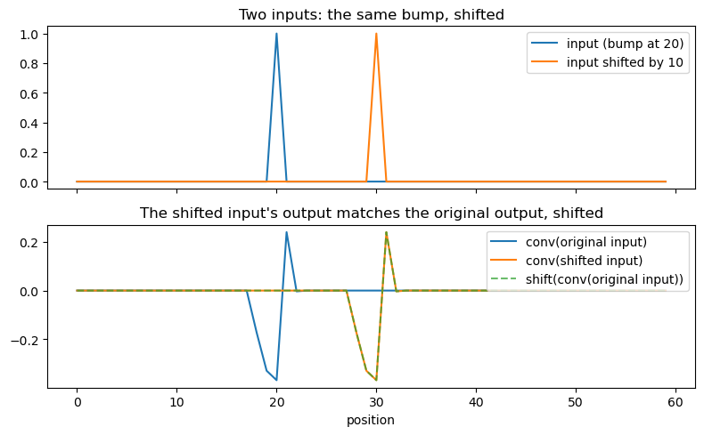
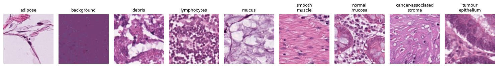
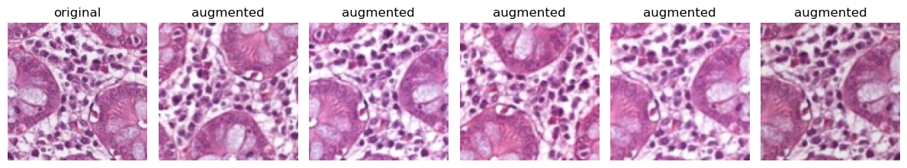
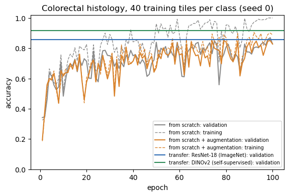
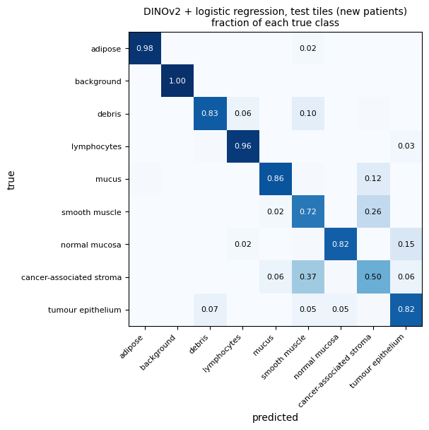
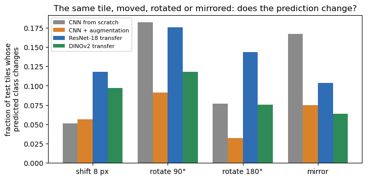
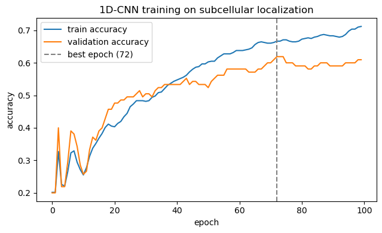
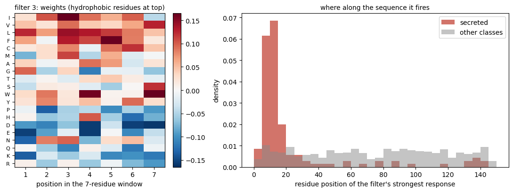
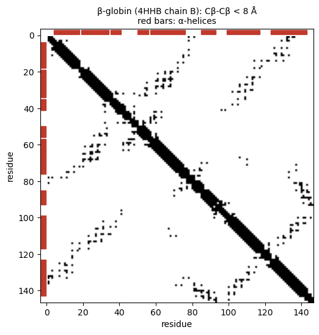

# Install the libraries Colab does not come with (does nothing if they are already installed)
import importlib.util, subprocess, sys
for module, package in [("Bio", "biopython"), ("transformers", "transformers")]:
if importlib.util.find_spec(module) is None:
subprocess.run([sys.executable, "-m", "pip", "install", "-q", package], check=True)Session 10 — CNNs in code
Three parts, following the book page:
- Convolution and images. Why weight sharing gives translation equivariance, then colorectal cancer histology (nine tissue types, only 40 labelled training tiles each): a small CNN from scratch, the same CNN with data augmentation, and transfer learning from two pretrained networks, an ImageNet-trained ResNet-18 and the self-supervised foundation model DINOv2. Plus a test of what a CNN is not invariant to: rotation.
- CNNs on protein sequences. Sessions 8-9’s subcellular-localization dataset and homology-aware split, now with a 1D CNN, and a look inside its first layer: the filters behave like learned PWMs (Session 5).
- Contact maps. A real contact map computed from hemoglobin’s 3D structure (Session 6): the kind of 2D image that deep CNNs learned to predict from sequence alignments between 2016 and 2018.
Runtime. Part 1 trains the small CNN six times (three random seeds, without and with augmentation) for EPOCHS = 100 epochs. On a GPU (Colab: Runtime → Change runtime type → T4 GPU) that takes about 5 minutes in total. On a CPU, set EPOCHS = 30 for a quicker, lower-accuracy run.
import numpy as np
import matplotlib.pyplot as plt
import torch
import torch.nn as nn
torch.manual_seed(0)
np.random.seed(0)
import io, os, tempfile, urllib.request
import torchvision
from torchvision import transforms as T
from torch.utils.data import DataLoader, Dataset, TensorDataset
from PIL import Image
device = "cuda" if torch.cuda.is_available() else "cpu"
torch.backends.cudnn.benchmark = False # reproducible GPU training
torch.backends.cudnn.deterministic = True
FIGS = "../figs" if os.path.isdir("../figs") else "."
print("device:", device)device: cudaPart 1 — Convolution and images
Part 1: why convolution gives translation equivariance (and, with global pooling, invariance)
A 1D convolution slides the same small kernel across every position of its input. If the input signal is shifted, the kernel sees the same local pattern, just later (or earlier) – so the output feature map should shift by exactly the same amount. That is equivariance: conv(shift(x)) == shift(conv(x)) (up to the boundary, where the kernel runs off the edge). This is a property of the architecture itself – weight sharing – and holds even for a completely untrained, randomly-initialized kernel, which is what we use below so there is no training involved in this demonstration at all.
conv = nn.Conv1d(in_channels=1, out_channels=1, kernel_size=5, padding=2, bias=False)
# A toy signal: a single sharp "bump" at position 20 in a length-60 sequence.
length = 60
signal = torch.zeros(1, 1, length)
signal[0, 0, 20] = 1.0
shift = 10
shifted_signal = torch.zeros(1, 1, length)
shifted_signal[0, 0, 20 + shift] = 1.0
with torch.no_grad():
out = conv(signal)[0, 0].numpy()
out_shifted = conv(shifted_signal)[0, 0].numpy()
# Compare: shifting the OUTPUT of the original by `shift` positions should
# match the output computed from the ALREADY-shifted input (away from the
# boundary effects near the edges where the kernel runs off the sequence).
out_rolled = np.roll(out, shift)
interior = slice(10, 50) # stay away from both edges
max_abs_diff = np.max(np.abs(out_rolled[interior] - out_shifted[interior]))
print(f"max |shift(conv(x)) - conv(shift(x))| over the interior region: {max_abs_diff:.2e}")
print("equivariant (matches to floating-point precision away from the edges):", max_abs_diff < 1e-6)max |shift(conv(x)) - conv(shift(x))| over the interior region: 0.00e+00
equivariant (matches to floating-point precision away from the edges): Truefig, axes = plt.subplots(2, 1, figsize=(8, 5), sharex=True)
axes[0].plot(signal[0, 0].numpy(), label="input (bump at 20)")
axes[0].plot(shifted_signal[0, 0].numpy(), label=f"input shifted by {shift}")
axes[0].set_title("Two inputs: the same bump, shifted")
axes[0].legend()
axes[1].plot(out, label="conv(original input)")
axes[1].plot(out_shifted, label="conv(shifted input)")
axes[1].plot(out_rolled, "--", label="shift(conv(original input))", alpha=0.7)
axes[1].set_title("The shifted input's output matches the original output, shifted")
axes[1].legend()
axes[1].set_xlabel("position")
plt.tight_layout()
plt.savefig("../figs/session10-conv-equivariance.png", dpi=150)
plt.show()
From equivariance to invariance. Equivariance alone still leaves the bump at a different position in the output feature map – useful, but not yet “the same answer regardless of position.” Global pooling (taking the max, or the mean, over the whole feature map) removes the position information entirely: the value of the peak is preserved by shifting, so its max is too, regardless of where it sits. That combination – weight-shared convolution (equivariant) followed by global pooling (position-independent) – is what gives a convolutional network translation invariance, and it requires no training to exist as a structural property of the architecture. Local pooling (say over 2 positions) only adds tolerance to small shifts; and a final Flatten + Linear layer would bring absolute position back, since it gives every position its own weight.
pooled_original = out.max()
pooled_shifted = out_shifted.max()
print(f"max-pooled output, original input: {pooled_original:.6f}")
print(f"max-pooled output, shifted input: {pooled_shifted:.6f}")
print("identical after pooling:", np.isclose(pooled_original, pooled_shifted))max-pooled output, original input: 0.239905
max-pooled output, shifted input: 0.239905
identical after pooling: TrueColorectal cancer histology: very little labelled data
A pathologist looks at thin slices of tissue stained with haematoxylin (nuclei, purple) and eosin (cytoplasm and connective tissue, pink). Kather and colleagues cut such H&E slides of colorectal cancer into small square tiles of 224 × 224 pixels (0.5 µm per pixel, so each tile is 112 µm across) and labelled each tile with one of nine tissue types (NCT-CRC-HE-100K; Kather et al. 2019, PLoS Med 16:e1002730; CC BY 4.0).
The full data set has 100,000 tiles from 86 slides, plus 7,180 tiles from 50 other patients (CRC-VAL-HE-7K). Labelled medical images are expensive, so we pretend we only have 40 labelled tiles per class:
- training: 40 tiles per class from the large set;
- validation: 40 other tiles per class from the large set. They can come from the same slides as the training tiles;
- test: 100 tiles per class from the 50 other patients.
The subset (9.5 MB, tiles shrunk to 112 × 112 pixels) is hosted with this notebook; make_crc_subset.py in the course repository shows how it was cut from the original files.
EPOCHS = 100 # 30 is fine for a quick CPU run (lower accuracy)
USE_FULL_TEST = False # True: test on all 7,180 tiles of the 50 held-out patients (800 MB download)
SUBSET_URL = "https://raw.githubusercontent.com/ElofssonLab/kb8029-book/main/notebooks/data/crc-histology-subset.npz"
FULL_TEST_URL = "https://zenodo.org/records/1214456/files/CRC-VAL-HE-7K.zip?download=1"
def download(url, filename):
"""Download url into the temporary directory once, and return the local path."""
path = os.path.join(tempfile.gettempdir(), filename)
if not os.path.exists(path):
urllib.request.urlretrieve(url, path + ".part")
os.replace(path + ".part", path)
return path
local = "data/crc-histology-subset.npz"
d = np.load(local if os.path.exists(local) else download(SUBSET_URL, "crc-histology-subset.npz"))
CODES, CLASS_NAMES = list(d["class_codes"]), list(d["class_names"])
def decode(split):
"""The JPEG-compressed tiles of one split as a list of PIL images, and their labels."""
jpeg, off = d[f"{split}_jpeg"], d[f"{split}_offsets"]
images = [Image.open(io.BytesIO(jpeg[off[i]:off[i + 1]].tobytes())).convert("RGB") for i in range(len(off) - 1)]
return images, d[f"{split}_labels"]
tiles = {split: decode(split) for split in ["train", "val", "test"]}
if USE_FULL_TEST:
import zipfile
zf = zipfile.ZipFile(download(FULL_TEST_URL, "CRC-VAL-HE-7K.zip"))
names = [n for n in zf.namelist() if n.endswith(".tif")]
tiles["test"] = ([Image.open(zf.open(n)).convert("RGB").resize((112, 112), Image.BILINEAR) for n in names],
np.array([CODES.index(n.split("/")[-2]) for n in names]))
for split, (images, labels) in tiles.items():
print(f"{split:5s} {len(images):5d} tiles, per class {np.bincount(labels).min()}-{np.bincount(labels).max()}")
fig, axes = plt.subplots(1, 9, figsize=(15, 2.3))
for k, ax in enumerate(axes):
ax.imshow(tiles["train"][0][int(np.where(tiles["train"][1] == k)[0][0])])
ax.set_title(CLASS_NAMES[k].replace(" ", "\n", 1), fontsize=9); ax.axis("off")
plt.tight_layout(); plt.savefig(f"{FIGS}/session10-crc-classes.png", dpi=150, bbox_inches="tight"); plt.show()train 360 tiles, per class 40-40
val 360 tiles, per class 40-40
test 900 tiles, per class 100-100
Data augmentation creates a new, slightly changed version of every training image in every epoch, with the same label. It tells the network which changes should not matter. For tissue the choice is easy: a section has no “up” and no “left”, so every rotation by 90° and every mirror image is an equally valid tile. We add a mild random zoom, and small changes of brightness and colour, because the strength of the stain varies from lab to lab.
class RotateFlip:
"""One of the eight symmetries of a square: rotate by 0, 90, 180 or 270 degrees, maybe mirror."""
def __call__(self, img):
img = img.rotate(90 * np.random.randint(4))
return img.transpose(Image.FLIP_LEFT_RIGHT) if np.random.rand() < 0.5 else img
norm = T.Normalize([0.485, 0.456, 0.406], [0.229, 0.224, 0.225]) # ImageNet channel statistics
plain_tf = T.Compose([T.ToTensor(), norm])
augment = T.Compose([RotateFlip(), T.RandomResizedCrop(112, scale=(0.8, 1.0), ratio=(1, 1)),
T.ColorJitter(0.1, 0.1, 0.1, 0.02)])
aug_tf = T.Compose([augment, T.ToTensor(), norm])
class Tiles(Dataset):
def __init__(self, split, tf):
self.images, self.labels = tiles[split]; self.tf = tf
def __len__(self): return len(self.labels)
def __getitem__(self, i): return self.tf(self.images[i]), int(self.labels[i])
def cache(ds):
"""Transform every image once and keep the tensors in memory (for data without random augmentation)."""
xs, ys = zip(*[ds[i] for i in range(len(ds))])
return TensorDataset(torch.stack(xs), torch.tensor(ys))
train_plain_c, val_c, test_c = cache(Tiles("train", plain_tf)), cache(Tiles("val", plain_tf)), cache(Tiles("test", plain_tf))
train_aug = Tiles("train", aug_tf)
np.random.seed(1); torch.manual_seed(1)
img0 = tiles["train"][0][int(np.where(tiles["train"][1] == 6)[0][0])] # a normal-mucosa tile
fig, axes = plt.subplots(1, 6, figsize=(12, 2.4))
axes[0].imshow(img0); axes[0].set_title("original")
for ax in axes[1:]:
ax.imshow(augment(img0)); ax.set_title("augmented")
for ax in axes: ax.axis("off")
plt.tight_layout(); plt.savefig(f"{FIGS}/session10-augmentation.png", dpi=150, bbox_inches="tight"); plt.show()
A small CNN, trained from scratch
Four blocks of convolution (3×3) → batch normalization → ReLU → 2×2 max pooling, then global average pooling and a linear layer to the nine classes. It has about 250,000 weights, and we have 360 training tiles. We train it without and with augmentation, each with three different random seeds: with so few examples, the result of a single run is partly luck.
def small_cnn(n_classes=9):
block = lambda i, o: [nn.Conv2d(i, o, 3, padding=1), nn.BatchNorm2d(o), nn.ReLU(), nn.MaxPool2d(2)]
return nn.Sequential(*block(3, 32), *block(32, 64), *block(64, 128), *block(128, 128),
nn.AdaptiveAvgPool2d(1), nn.Flatten(), nn.Dropout(0.3), nn.Linear(128, n_classes))
def predict(model, dataset):
model.eval(); out = []
with torch.no_grad():
for x, _ in DataLoader(dataset, batch_size=256):
out.append(model(x.to(device)).argmax(1).cpu())
return torch.cat(out).numpy()
def evaluate(model, dataset):
return (predict(model, dataset) == dataset.tensors[1].numpy()).mean() # cached datasets only
def train_cnn(train_set, epochs=EPOCHS, seed=0):
torch.manual_seed(seed); np.random.seed(seed)
model = small_cnn().to(device)
opt = torch.optim.Adam(model.parameters(), lr=1e-3)
loader = DataLoader(train_set, batch_size=32, shuffle=True, generator=torch.Generator().manual_seed(seed))
hist, best = [], (0.0, None)
for epoch in range(epochs):
model.train()
for x, y in loader:
opt.zero_grad()
nn.functional.cross_entropy(model(x.to(device)), y.to(device)).backward()
opt.step()
tr, va = evaluate(model, train_plain_c), evaluate(model, val_c)
hist.append((tr, va))
if va > best[0]:
best = (va, {k: v.clone() for k, v in model.state_dict().items()})
model.load_state_dict(best[1]) # early stopping on validation accuracy
return model, hist
results, models = {}, {}
for name, ds in [("from scratch", train_plain_c), ("from scratch + augmentation", train_aug)]:
runs = []
for seed in range(3):
model, hist = train_cnn(ds, seed=seed)
best_ep = int(np.argmax([v for _, v in hist]))
runs.append(dict(hist=hist, val=hist[best_ep][1], train=hist[best_ep][0], test=evaluate(model, test_c)))
if seed == 0:
models[name] = model
print(f"{name:28s} seed {seed}: best val {runs[-1]['val']:.3f} (epoch {best_ep + 1}), "
f"train acc then {runs[-1]['train']:.3f} -> TEST {runs[-1]['test']:.3f}")
results[name] = dict(runs=runs, val=np.mean([r["val"] for r in runs]), test=np.mean([r["test"] for r in runs]),
test_range=(min(r["test"] for r in runs), max(r["test"] for r in runs)))
print(f"\nweights in the small CNN: {sum(p.numel() for p in models['from scratch'].parameters()):,}")from scratch seed 0: best val 0.869 (epoch 99), train acc then 1.000 -> TEST 0.786
from scratch seed 1: best val 0.867 (epoch 99), train acc then 0.983 -> TEST 0.721
from scratch seed 2: best val 0.847 (epoch 84), train acc then 0.992 -> TEST 0.729
from scratch + augmentation seed 0: best val 0.850 (epoch 74), train acc then 0.894 -> TEST 0.769
from scratch + augmentation seed 1: best val 0.858 (epoch 81), train acc then 0.928 -> TEST 0.821
from scratch + augmentation seed 2: best val 0.856 (epoch 91), train acc then 0.906 -> TEST 0.787
weights in the small CNN: 242,697Transfer learning: borrow features learned on millions of images
The alternative that took over the field: start from a network that has already learned general visual features, keep it frozen, and train only a new last layer (here a logistic regression) on our 360 tiles. We try two such networks:
- ResNet-18 (He et al., 2016), trained with labels on 1.2 million ImageNet photos (cats, cars, mushrooms; no tissue). Each tile becomes 512 numbers.
- DINOv2 (Oquab et al., 2023), a small vision Transformer (ViT-S/14, 22 million weights) trained without any labels on 142 million images: it learned by making its description of a picture agree with its description of other, cropped and distorted versions of the same picture. This is a foundation model: trained once, at great cost, on huge unlabelled data, then reused for many tasks. Each tile becomes 384 numbers.
Both expect 224 × 224 pixel inputs, so the tiles are enlarged.
import warnings
warnings.filterwarnings("ignore")
os.environ["HF_HUB_DISABLE_PROGRESS_BARS"] = "1" # quiet downloads (set before importing transformers)
os.environ["HF_HUB_VERBOSITY"] = "error"
from sklearn.linear_model import LogisticRegression
from transformers import AutoModel
from transformers.utils import logging as hf_logging
hf_logging.set_verbosity_error(); hf_logging.disable_progress_bar()
resnet = torchvision.models.resnet18(weights=torchvision.models.ResNet18_Weights.IMAGENET1K_V1).to(device).eval()
resnet_backbone = nn.Sequential(*list(resnet.children())[:-1], nn.Flatten()) # everything except the last layer
dinov2 = AutoModel.from_pretrained("facebook/dinov2-small").to(device).eval()
backbones = {"transfer: ResNet-18 (ImageNet)": resnet_backbone,
"transfer: DINOv2 (self-supervised)": lambda x: dinov2(pixel_values=x).pooler_output}
tf224 = T.Compose([T.Resize(224), T.ToTensor(), norm])
def features(backbone, split, tf=tf224):
out = []
with torch.no_grad():
for x, _ in DataLoader(Tiles(split, tf), batch_size=64):
out.append(backbone(x.to(device)).cpu())
return torch.cat(out).numpy()
heads = {}
for name, backbone in backbones.items():
F = {split: features(backbone, split) for split in ["train", "val", "test"]}
heads[name] = LogisticRegression(max_iter=5000).fit(F["train"], tiles["train"][1])
results[name] = dict(val=heads[name].score(F["val"], tiles["val"][1]),
test=heads[name].score(F["test"], tiles["test"][1]))
if "DINOv2" in name:
dino_test_pred = heads[name].predict(F["test"])
print(f"{name:36s} {F['train'].shape[1]} features per tile val {results[name]['val']:.3f} TEST {results[name]['test']:.3f}")transfer: ResNet-18 (ImageNet) 512 features per tile val 0.856 TEST 0.780
transfer: DINOv2 (self-supervised) 384 features per tile val 0.917 TEST 0.832plt.figure(figsize=(6.5, 4))
for name, color in [("from scratch", "#8a8a8a"), ("from scratch + augmentation", "#d9822b")]:
tr, va = zip(*results[name]["runs"][0]["hist"])
plt.plot(np.arange(1, len(va) + 1), va, color=color, label=f"{name}: validation")
plt.plot(np.arange(1, len(tr) + 1), tr, color=color, ls="--", lw=1, label=f"{name}: training")
for name, color in [("transfer: ResNet-18 (ImageNet)", "#2f6db5"), ("transfer: DINOv2 (self-supervised)", "#2e8b57")]:
plt.axhline(results[name]["val"], color=color, label=f"{name}: validation")
plt.xlabel("epoch"); plt.ylabel("accuracy"); plt.ylim(0, 1.02)
plt.title("Colorectal histology, 40 training tiles per class (seed 0)")
plt.legend(fontsize=7, loc="lower right")
plt.savefig(f"{FIGS}/session10-crc-curves.png", dpi=150, bbox_inches="tight"); plt.show()
print(f"{'':36s} {'validation':>10s} {'TEST':>6s}")
for name, r in results.items():
extra = f" (three seeds: {r['test_range'][0]:.3f}-{r['test_range'][1]:.3f})" if "test_range" in r else ""
print(f"{name:36s} {r['val']:10.3f} {r['test']:6.3f}{extra}")
validation TEST
from scratch 0.861 0.745 (three seeds: 0.721-0.786)
from scratch + augmentation 0.855 0.792 (three seeds: 0.769-0.821)
transfer: ResNet-18 (ImageNet) 0.856 0.780
transfer: DINOv2 (self-supervised) 0.917 0.832Validation from the same slides, test from new patients
Every model scores clearly higher on the validation tiles than on the test tiles. The validation tiles can come from the same slides, and so the same patients, staining runs and scanner settings, as the training tiles; the test tiles come from 50 patients the model has never seen. This is Session 8’s homology trap again, now for images: whenever examples come in related groups (proteins in families, tiles in patients), the honest split is by group. Which tissue types does the best model confuse on the new patients?
from sklearn.metrics import confusion_matrix
cm = confusion_matrix(tiles["test"][1], dino_test_pred, normalize="true")
fig, ax = plt.subplots(figsize=(6.2, 5.4))
ax.imshow(cm, cmap="Blues", vmin=0, vmax=1)
for i in range(9):
for j in range(9):
if cm[i, j] >= 0.02:
ax.text(j, i, f"{cm[i, j]:.2f}", ha="center", va="center", fontsize=8, color="white" if cm[i, j] > 0.5 else "black")
ax.set_xticks(range(9)); ax.set_xticklabels(CLASS_NAMES, rotation=45, ha="right", fontsize=8)
ax.set_yticks(range(9)); ax.set_yticklabels(CLASS_NAMES, fontsize=8)
ax.set_xlabel("predicted"); ax.set_ylabel("true")
ax.set_title("DINOv2 + logistic regression, test tiles (new patients)\nfraction of each true class", fontsize=10)
plt.savefig(f"{FIGS}/session10-crc-confusion.png", dpi=150, bbox_inches="tight"); plt.show()
for i in np.argsort(np.diag(cm))[:3]:
j = int(np.argmax(np.where(np.arange(9) == i, -1, cm[i])))
print(f"{CLASS_NAMES[i]:26s} correct {cm[i, i]:.2f}; most often mistaken for {CLASS_NAMES[j]} ({cm[i, j]:.2f})")
cancer-associated stroma correct 0.50; most often mistaken for smooth muscle (0.37)
smooth muscle correct 0.72; most often mistaken for cancer-associated stroma (0.26)
normal mucosa correct 0.82; most often mistaken for tumour epithelium (0.15)What a CNN is (and isn’t) invariant to
Convolution plus pooling makes a CNN largely insensitive to where a pattern is. Nothing in the architecture makes it insensitive to rotation or mirroring. Accuracy alone can hide this, so we ask a sharper question: for what fraction of the test tiles does the predicted class change when the same tile is shifted, rotated or mirrored? A truly invariant classifier would change none. For a fair comparison every version is a 96 × 96 pixel crop: the centre crop, the crop shifted by 8 pixels, or the centre crop rotated or mirrored (rotations by multiples of 90° and mirror images lose no pixels).
def view(k=0, mirror=False, shift=0, crop=96):
def f(img):
w = img.size[0]; a = (w - crop) // 2 + shift
img = img.crop((a, a, a + crop, a + crop)).rotate(90 * k)
return img.transpose(Image.FLIP_LEFT_RIGHT) if mirror else img
return f
tests = {"shift 8 px": view(shift=8), "rotate 90°": view(k=1), "rotate 180°": view(k=2), "mirror": view(mirror=True)}
classifiers = {
"CNN from scratch": lambda v: predict(models["from scratch"], cache(Tiles("test", T.Compose([v, T.ToTensor(), norm])))),
"CNN + augmentation": lambda v: predict(models["from scratch + augmentation"], cache(Tiles("test", T.Compose([v, T.ToTensor(), norm])))),
"ResNet-18 transfer": lambda v: heads["transfer: ResNet-18 (ImageNet)"].predict(
features(backbones["transfer: ResNet-18 (ImageNet)"], "test", T.Compose([v, T.Resize(224), T.ToTensor(), norm]))),
"DINOv2 transfer": lambda v: heads["transfer: DINOv2 (self-supervised)"].predict(
features(backbones["transfer: DINOv2 (self-supervised)"], "test", T.Compose([v, T.Resize(224), T.ToTensor(), norm]))),
}
changed = {}
for cname, clf in classifiers.items():
base = clf(view())
changed[cname] = {t: (clf(v) != base).mean() for t, v in tests.items()}
print(f"{cname:20s} accuracy on centre crops {(base == tiles['test'][1]).mean():.3f}; predictions changed: "
+ " ".join(f"{t} {c:.3f}" for t, c in changed[cname].items()))
fig, ax = plt.subplots(figsize=(8, 3.8))
width = 0.2
for i, (cname, color) in enumerate(zip(classifiers, ["#8a8a8a", "#d9822b", "#2f6db5", "#2e8b57"])):
vals = [changed[cname][t] for t in tests]
ax.bar(np.arange(len(tests)) + (i - 1.5) * width, vals, width, color=color, label=cname)
ax.set_xticks(range(len(tests))); ax.set_xticklabels(list(tests))
ax.set_ylabel("fraction of test tiles whose\npredicted class changes")
ax.set_title("The same tile, moved, rotated or mirrored: does the prediction change?")
ax.legend(fontsize=8)
plt.savefig(f"{FIGS}/session10-rotation-shift.png", dpi=150, bbox_inches="tight"); plt.show()CNN from scratch accuracy on centre crops 0.771; predictions changed: shift 8 px 0.051 rotate 90° 0.182 rotate 180° 0.077 mirror 0.167
CNN + augmentation accuracy on centre crops 0.754; predictions changed: shift 8 px 0.057 rotate 90° 0.091 rotate 180° 0.032 mirror 0.074
ResNet-18 transfer accuracy on centre crops 0.783; predictions changed: shift 8 px 0.118 rotate 90° 0.176 rotate 180° 0.143 mirror 0.103
DINOv2 transfer accuracy on centre crops 0.809; predictions changed: shift 8 px 0.097 rotate 90° 0.118 rotate 180° 0.076 mirror 0.063
Without augmentation, rotating a tile by 90° changes the CNN’s predicted class for about one test tile in five, and mirroring it almost as often, although nothing about the tissue has changed. Shifting the window by 8 pixels changes far fewer: convolution and pooling take care of position, not of orientation. Training on rotated and mirrored copies roughly halves the changes. The network learned the symmetry from the data, because the architecture could not give it.
The pretrained networks are not invariant either. ImageNet photos are almost always upright, so ResNet-18 never needed to ignore rotations. DINOv2 saw mirrored images during its self-supervised training, but no rotated ones, and it shows: mirroring changes fewer of its predictions than a 90° rotation does. This is why histology pipelines augment with all rotations and flips, and why rotation-equivariant CNNs, which build the symmetry into the architecture, were developed for pathology (Veeling et al. 2018).
Part 2 — CNNs on protein sequences
Part 2: the subcellular-localization case study, this time with a 1D CNN
Same dataset, same encoding, same homology-aware train/val/test split as Sessions 8-9 (fetched live from UniProt again here, with the same fixed random seeds, so it should reproduce the same 700-protein, 5-class, 486/105/109 homology-aware split) – but this time the classifier is a 1D convolutional network over the sequence, instead of a flat fully-connected one, directly demonstrating the “1D convolution over a sequence” idea from the book page.
import re
import requests
UNIPROT_CLASSES = {
"Cytoplasm": "SL-0086",
"Nucleus": "SL-0191",
"Mitochondrion": "SL-0173",
"Secreted": "SL-0243",
"Cell membrane": "SL-0039",
}
CLASS_NAMES = list(UNIPROT_CLASSES.keys())
def fetch_uniprot(sl_code, size=500):
query = f"organism_id:9606 AND reviewed:true AND cc_scl_term:{sl_code} AND length:[50 TO 500]"
r = requests.get(
"https://rest.uniprot.org/uniprotkb/search",
params={"query": query, "fields": "accession,sequence,cc_subcellular_location",
"format": "tsv", "size": size},
timeout=60,
)
r.raise_for_status()
rows = []
for line in r.text.strip().split("\n")[1:]:
parts = line.split("\t")
if len(parts) == 3:
rows.append(tuple(parts))
return rows
def is_unambiguous_single_location(location_text, target):
location_text = re.sub(r"Note=.*", "", location_text)
location_text = re.sub(r"\{[^}]*\}", "", location_text)
if "Isoform" in location_text:
return False
terms = set()
for statement in [s.strip() for s in location_text.split(".") if s.strip()]:
body = statement.split(":", 1)[-1] if ":" in statement else statement
top_term = re.split(r"[,;]", body)[0].strip().rstrip(".")
if top_term:
terms.add(top_term)
return terms == {target}
entries_by_class = {name: [] for name in CLASS_NAMES}
for name, code in UNIPROT_CLASSES.items():
rows = fetch_uniprot(code, size=500)
kept = [(acc, seq) for (acc, seq, loc) in rows if is_unambiguous_single_location(loc, name)]
entries_by_class[name] = kept
print(f"{name}: fetched {len(rows)}, unambiguous single-location {len(kept)}")Cytoplasm: fetched 500, unambiguous single-location 424
Nucleus: fetched 500, unambiguous single-location 497
Mitochondrion: fetched 500, unambiguous single-location 140
Secreted: fetched 500, unambiguous single-location 488
Cell membrane: fetched 500, unambiguous single-location 338N_PER_CLASS = min(len(v) for v in entries_by_class.values())
print("balancing every class to", N_PER_CLASS, "sequences")
rng = np.random.RandomState(0)
balanced_accs, balanced_seqs, balanced_labels = [], [], []
for class_idx, class_name in enumerate(CLASS_NAMES):
pool = entries_by_class[class_name]
for i in rng.choice(len(pool), N_PER_CLASS, replace=False):
balanced_accs.append(pool[i][0])
balanced_seqs.append(pool[i][1])
balanced_labels.append(class_idx)
print("total balanced dataset:", len(balanced_seqs), "sequences,", len(CLASS_NAMES), "classes")
print("(Session 8/9 reported 700 sequences, 140/class -- checking this matches)")balancing every class to 140 sequences
total balanced dataset: 700 sequences, 5 classes
(Session 8/9 reported 700 sequences, 140/class -- checking this matches)AMINO_ACIDS = "ACDEFGHIKLMNPQRSTVWY"
AA_TO_INDEX = {aa: i for i, aa in enumerate(AMINO_ACIDS)}
SEQ_LEN = 150
def one_hot_encode(sequence, length=SEQ_LEN):
encoded = np.zeros((length, len(AMINO_ACIDS)), dtype=np.float32)
for position, residue in enumerate(sequence[:length]):
if residue in AA_TO_INDEX:
encoded[position, AA_TO_INDEX[residue]] = 1.0
return encoded # (SEQ_LEN, 20) -- NOT flattened this time, a CNN wants the 2D shape
X = np.stack([one_hot_encode(s) for s in balanced_seqs]) # (N, 150, 20)
X = X.transpose(0, 2, 1) # (N, 20, 150): channels=amino acids, length=position
y = np.array(balanced_labels)
print("X shape:", X.shape, " (N, channels=20 amino acids, length=150 positions)")
print("y shape:", y.shape)X shape: (700, 20, 150) (N, channels=20 amino acids, length=150 positions)
y shape: (700,)import os, shutil, subprocess, tempfile
# Session 8's homology-aware split: MMseqs2 clusters at 30% identity, whole clusters per split
CLUSTER_URL = "https://raw.githubusercontent.com/ElofssonLab/kb8029-book/main/notebooks/data/session08-subcell-mmseqs-30.tsv"
LOCAL_TSV = "data/session08-subcell-mmseqs-30.tsv"
def mmseqs_clusters(accs, seqs, min_seq_id=0.3):
tmp = tempfile.mkdtemp()
with open(f"{tmp}/in.fasta", "w") as f:
for a, s in zip(accs, seqs):
f.write(f">{a}\n{s}\n")
subprocess.run(["mmseqs", "easy-cluster", f"{tmp}/in.fasta", f"{tmp}/clu", f"{tmp}/work",
"--min-seq-id", str(min_seq_id), "-c", "0.5", "-v", "1"],
check=True, stdout=subprocess.DEVNULL)
pairs = [line.split("\t") for line in open(f"{tmp}/clu_cluster.tsv").read().split("\n") if line]
shutil.rmtree(tmp)
return {member: rep for rep, member in pairs}
def load_precomputed_clusters():
text = open(LOCAL_TSV).read() if os.path.exists(LOCAL_TSV) else requests.get(CLUSTER_URL, timeout=30).text
pairs = [line.split("\t") for line in text.strip().split("\n")[1:]]
return {member: rep for rep, member in pairs}
if shutil.which("mmseqs"):
member_to_rep = mmseqs_clusters(balanced_accs, balanced_seqs)
print("clustered with local MMseqs2 (30% identity, 50% coverage)")
else:
member_to_rep = load_precomputed_clusters()
print("mmseqs not found -- loaded the precomputed MMseqs2 clustering")
# proteins missing from the clustering (e.g. if UniProt changed) become their own cluster
reps = [member_to_rep.get(a, a) for a in balanced_accs]
rep_ids = {r: i for i, r in enumerate(sorted(set(reps)))}
groups = np.array([rep_ids[r] for r in reps])
sizes = np.bincount(groups)
print(f"{len(y)} proteins -> {len(sizes)} clusters; "
f"{(sizes > 1).sum()} clusters have more than one member ({sizes[sizes > 1].sum()} proteins), largest has {sizes.max()}")
def homology_split(y, groups, fractions=(0.70, 0.15, 0.15), seed=0):
'''Assign whole clusters, in random order, to train/val/test: each cluster
goes to the split furthest below its target share of that cluster's
classes (ties broken at random). Returns three index arrays.'''
rng = np.random.RandomState(seed)
n_classes = y.max() + 1
target = np.outer(fractions, np.bincount(y, minlength=n_classes)) # (3 splits, n_classes)
have = np.zeros_like(target)
assignment = {}
for g in rng.permutation(np.unique(groups)):
cls_counts = np.bincount(y[groups == g], minlength=n_classes)
deficit = ((target - have) * (cls_counts > 0)).sum(axis=1) / target.sum(axis=1)
best = np.flatnonzero(deficit == deficit.max())
split = int(rng.choice(best))
assignment[g] = split
have[split] += cls_counts
split_of = np.array([assignment[g] for g in groups])
return [np.where(split_of == k)[0] for k in range(3)]
tr_h, va_h, te_h = homology_split(y, groups)
X_train, y_train = X[tr_h], y[tr_h]
X_val, y_val = X[va_h], y[va_h]
X_test, y_test = X[te_h], y[te_h]
print(f"train: {len(X_train)} val: {len(X_val)} test: {len(X_test)}")
print("(Session 8/9 reported 486 / 105 / 109 -- checking this matches)")
X_train_t = torch.tensor(X_train, dtype=torch.float32)
X_val_t = torch.tensor(X_val, dtype=torch.float32)
X_test_t = torch.tensor(X_test, dtype=torch.float32)
y_train_t = torch.tensor(y_train, dtype=torch.long)
y_val_t = torch.tensor(y_val, dtype=torch.long)
y_test_t = torch.tensor(y_test, dtype=torch.long)clustered with local MMseqs2 (30% identity, 50% coverage)
700 proteins -> 551 clusters; 75 clusters have more than one member (224 proteins), largest has 11
train: 486 val: 105 test: 109
(Session 8/9 reported 486 / 105 / 109 -- checking this matches)A 1D-CNN classifier
Two convolutional layers (kernel size 7, i.e. each filter looks at a 7-residue window) with ReLU and max-pooling, then global average pooling over the remaining sequence length (making the classifier’s decision insensitive to where along the sequence a signal was detected – exactly Part 1’s equivariance-then-pooling argument, now inside a real classifier), then a linear layer to the 5 classes.
torch.manual_seed(0) # fixed initial weights, independent of what ran in Part 1
class LocalizationCNN(nn.Module):
def __init__(self, n_classes=5, n_channels=20):
super().__init__()
self.conv1 = nn.Conv1d(n_channels, 32, kernel_size=7, padding=3)
self.conv2 = nn.Conv1d(32, 64, kernel_size=7, padding=3)
self.pool = nn.MaxPool1d(2)
self.classifier = nn.Linear(64, n_classes)
def forward(self, x): # x: (batch, 20, 150)
x = torch.relu(self.conv1(x))
x = self.pool(x)
x = torch.relu(self.conv2(x))
x = torch.adaptive_avg_pool1d(x, 1).squeeze(-1) # global average pool -> (batch, 64)
return self.classifier(x) # raw logits, (batch, n_classes)
cnn_model = LocalizationCNN()
n_params = sum(p.numel() for p in cnn_model.parameters())
print(cnn_model)
print("total trainable parameters:", n_params)
print("(Session 8/9's flat MLP had ~192,389 parameters -- for comparison)")LocalizationCNN(
(conv1): Conv1d(20, 32, kernel_size=(7,), stride=(1,), padding=(3,))
(conv2): Conv1d(32, 64, kernel_size=(7,), stride=(1,), padding=(3,))
(pool): MaxPool1d(kernel_size=2, stride=2, padding=0, dilation=1, ceil_mode=False)
(classifier): Linear(in_features=64, out_features=5, bias=True)
)
total trainable parameters: 19237
(Session 8/9's flat MLP had ~192,389 parameters -- for comparison)criterion = nn.CrossEntropyLoss()
optimizer = torch.optim.Adam(cnn_model.parameters(), lr=1e-3, weight_decay=1e-4)
best_val_acc = 0.0
best_state = None
history = {"train_acc": [], "val_acc": []}
def accuracy(model, X, y):
model.eval()
with torch.no_grad():
preds = model(X).argmax(dim=1)
return (preds == y).float().mean().item()
for epoch in range(100):
cnn_model.train()
optimizer.zero_grad()
logits = cnn_model(X_train_t)
loss = criterion(logits, y_train_t)
loss.backward()
optimizer.step()
train_acc = accuracy(cnn_model, X_train_t, y_train_t)
val_acc = accuracy(cnn_model, X_val_t, y_val_t)
history["train_acc"].append(train_acc)
history["val_acc"].append(val_acc)
if val_acc > best_val_acc:
best_val_acc = val_acc
best_epoch = epoch
best_state = {k: v.clone() for k, v in cnn_model.state_dict().items()}
cnn_model.load_state_dict(best_state)
print(f"best validation accuracy {best_val_acc:.3f} at epoch {best_epoch} of 100 (early-stopped, same practice as Session 9)")
print(f"final train accuracy at that epoch: {history['train_acc'][best_epoch]:.3f}")best validation accuracy 0.619 at epoch 72 of 100 (early-stopped, same practice as Session 9)
final train accuracy at that epoch: 0.667plt.figure(figsize=(6.5, 4))
plt.plot(history["train_acc"], label="train accuracy")
plt.plot(history["val_acc"], label="validation accuracy")
plt.axvline(best_epoch, linestyle="--", color="gray", label=f"best epoch ({best_epoch})")
plt.xlabel("epoch")
plt.ylabel("accuracy")
plt.title("1D-CNN training on subcellular localization")
plt.legend()
plt.tight_layout()
plt.savefig("../figs/session10-cnn-training-curve.png", dpi=150)
plt.show()
Evaluating on the held-out test set, with the same metrics as Session 8/9
from sklearn.metrics import precision_recall_fscore_support, roc_auc_score, matthews_corrcoef
import torch.nn.functional as F
cnn_model.eval()
with torch.no_grad():
test_logits = cnn_model(X_test_t)
test_probs = F.softmax(test_logits, dim=1).numpy()
test_preds = test_logits.argmax(dim=1).numpy()
cnn_test_acc = (test_preds == y_test).mean()
precision, recall, f1, _ = precision_recall_fscore_support(y_test, test_preds, average="macro", zero_division=0)
cnn_mcc = matthews_corrcoef(y_test, test_preds)
cnn_auroc = roc_auc_score(y_test, test_probs, multi_class="ovr", average="macro")
print(f"1D-CNN test accuracy: {cnn_test_acc:.3f}")
print(f"1D-CNN F1: {f1:.3f}")
print(f"1D-CNN MCC: {cnn_mcc:.3f}")
print(f"1D-CNN AUROC: {cnn_auroc:.3f}")
print()
print("For comparison, on the SAME homology-aware test set (Sessions 8-9):")
print(" flat MLP, untrained (Session 8, validation set): accuracy 0.181, F1 0.124, MCC -0.027, AUROC 0.474")
print(" flat MLP, trained, early-stopped (Session 9): accuracy 0.514, F1 0.493, MCC 0.394, AUROC 0.831")
print(" logistic regression, no hidden layer (Session 9): accuracy 0.569, MCC 0.461, AUROC 0.849")1D-CNN test accuracy: 0.587
1D-CNN F1: 0.586
1D-CNN MCC: 0.484
1D-CNN AUROC: 0.869
For comparison, on the SAME homology-aware test set (Sessions 8-9):
flat MLP, untrained (Session 8, validation set): accuracy 0.181, F1 0.124, MCC -0.027, AUROC 0.474
flat MLP, trained, early-stopped (Session 9): accuracy 0.514, F1 0.493, MCC 0.394, AUROC 0.831
logistic regression, no hidden layer (Session 9): accuracy 0.569, MCC 0.461, AUROC 0.849Inside the first layer: filters are learned PWMs
Each first-layer filter is a 20 × 7 matrix of weights: one weight per amino acid per position in a 7-residue window. That is the shape of a position weight matrix (Session 5), except that the network learned it from the class labels instead of from an alignment. Which filters matter for secreted proteins? For every filter, compare its strongest response along the sequence in secreted vs. all other proteins, then look at the most selective ones.
from scipy.stats import pearsonr
KD = {'A': 1.8, 'R': -4.5, 'N': -3.5, 'D': -3.5, 'C': 2.5, 'Q': -3.5, 'E': -3.5, 'G': -0.4, 'H': -3.2, 'I': 4.5,
'L': 3.8, 'K': -3.9, 'M': 1.9, 'F': 2.8, 'P': -1.6, 'S': -0.8, 'T': -0.7, 'W': -0.9, 'Y': -1.3, 'V': 4.2}
kd = np.array([KD[a] for a in AMINO_ACIDS])
cnn_model.eval()
with torch.no_grad():
act = torch.relu(cnn_model.conv1(torch.tensor(X, dtype=torch.float32))) # (proteins, filters, positions)
peak_value = act.max(dim=2).values.numpy()
peak_pos = act.argmax(dim=2).numpy()
is_sec = (y == CLASS_NAMES.index("Secreted"))
selectivity = peak_value[is_sec].mean(0) - peak_value[~is_sec].mean(0)
W1 = cnn_model.conv1.weight.detach().numpy() # (filters, 20 amino acids, 7 positions)
print("the 5 filters most selective for secreted proteins:")
for f in np.argsort(-selectivity)[:5]:
r, p = pearsonr(W1[f].mean(axis=1), kd)
print(f" filter {f:2d}: correlation of its amino-acid weights with Kyte-Doolittle hydrophobicity r = {r:.2f} "
f"(p = {p:.0e}); peak position median {np.median(peak_pos[is_sec, f]):.0f} in secreted, "
f"{np.median(peak_pos[~is_sec, f]):.0f} in other proteins")
all_r = [pearsonr(W1[f].mean(axis=1), kd)[0] for f in range(W1.shape[0])]
print(f"for comparison, all {W1.shape[0]} filters: mean r = {np.mean(all_r):.2f}")the 5 filters most selective for secreted proteins:
filter 3: correlation of its amino-acid weights with Kyte-Doolittle hydrophobicity r = 0.81 (p = 1e-05); peak position median 12 in secreted, 76 in other proteins
filter 18: correlation of its amino-acid weights with Kyte-Doolittle hydrophobicity r = 0.70 (p = 6e-04); peak position median 11 in secreted, 62 in other proteins
filter 21: correlation of its amino-acid weights with Kyte-Doolittle hydrophobicity r = 0.76 (p = 1e-04); peak position median 11 in secreted, 74 in other proteins
filter 27: correlation of its amino-acid weights with Kyte-Doolittle hydrophobicity r = 0.72 (p = 3e-04); peak position median 12 in secreted, 67 in other proteins
filter 24: correlation of its amino-acid weights with Kyte-Doolittle hydrophobicity r = 0.83 (p = 6e-06); peak position median 11 in secreted, 74 in other proteins
for comparison, all 32 filters: mean r = 0.12best = int(np.argmax(selectivity))
order = np.argsort(-kd) # most hydrophobic amino acids at the top
fig, (a1, a2) = plt.subplots(1, 2, figsize=(11, 4.2), gridspec_kw={"width_ratios": [1, 1.6]})
lim = np.abs(W1[best]).max()
im = a1.imshow(W1[best][order], cmap="RdBu_r", vmin=-lim, vmax=lim, aspect="auto")
a1.set_yticks(range(20)); a1.set_yticklabels([AMINO_ACIDS[i] for i in order], fontsize=8)
a1.set_xticks(range(7)); a1.set_xticklabels(range(1, 8)); a1.set_xlabel("position in the 7-residue window")
a1.set_title(f"filter {best}: weights (hydrophobic residues at top)", fontsize=10)
plt.colorbar(im, ax=a1, fraction=0.05)
bins = np.arange(0, SEQ_LEN + 1, 5)
a2.hist(peak_pos[is_sec, best], bins=bins, alpha=0.7, color="#c0392b", label="secreted", density=True)
a2.hist(peak_pos[~is_sec, best], bins=bins, alpha=0.5, color="#8a8a8a", label="other classes", density=True)
a2.set_xlabel("residue position of the filter's strongest response"); a2.set_ylabel("density")
a2.set_title("where along the sequence it fires", fontsize=10); a2.legend()
plt.tight_layout(); plt.savefig(f"{FIGS}/session10-signal-filter.png", dpi=150, bbox_inches="tight"); plt.show()
Nobody told the network about signal peptides. It was given one-hot sequences and five labels. Yet its most secreted-specific filters weight hydrophobic residues (L, I, V, F…) positively and charged ones negatively, and they fire around residues 10-15: the hydrophobic core of a signal peptide (Session 11 returns to signal peptides in detail). DeepBind (Alipanahi et al., 2015) made the same observation for DNA: the first-layer filters of CNNs trained on binding data match known transcription-factor motifs.
Part 3 — Contact maps: images made from protein structures
A contact map marks which residue pairs are close in 3D: here, pairs whose Cβ atoms (Cα for glycine) are within 8 Å, the standard CASP definition. Computed from the real crystal structure of hemoglobin (PDB 4HHB, chain B = β-globin, Session 6), with the helices from the PDB file’s own annotation drawn along the axes:
import io, requests
from Bio.PDB import PDBParser
pdb_text = requests.get("https://files.rcsb.org/download/4HHB.pdb", timeout=60).text
chain = PDBParser(QUIET=True).get_structure("4HHB", io.StringIO(pdb_text))[0]["B"]
residues = [r for r in chain if r.id[0] == " "]
coords = np.array([(r["CB"] if "CB" in r else r["CA"]).coord for r in residues])
dist = np.linalg.norm(coords[:, None] - coords[None], axis=2)
contact = dist < 8.0
L = len(residues)
i, j = np.triu_indices(L, 6)
sep = j - i
print(f"{L} residues; contacts with |i-j| >= 6: {contact[i, j].sum()}, of which long-range (|i-j| >= 24): "
f"{contact[i, j][sep >= 24].sum()}, medium-range (12-23): {contact[i, j][(sep >= 12) & (sep < 24)].sum()}")
helices = [(int(l[21:25]), int(l[33:37])) for l in pdb_text.splitlines() if l.startswith("HELIX") and l[19] == "B"]
print("helices (residue ranges):", helices)146 residues; contacts with |i-j| >= 6: 197, of which long-range (|i-j| >= 24): 150, medium-range (12-23): 24
helices (residue ranges): [(4, 18), (19, 34), (35, 41), (50, 56), (57, 76), (85, 93), (99, 117), (123, 143)]fig, ax = plt.subplots(figsize=(5.8, 5.8))
ax.imshow(contact, cmap="Greys", origin="upper", extent=(0.5, L + 0.5, L + 0.5, 0.5))
for k, (a, b) in enumerate(helices):
for rect in [plt.Rectangle((a, -3), b - a, 2.5), plt.Rectangle((-3, a), 2.5, b - a)]:
rect.set_color("#c0392b"); rect.set_clip_on(False); ax.add_patch(rect)
ax.set_xlim(-3.5, L + 0.5); ax.set_ylim(L + 0.5, -3.5)
ax.set_xlabel("residue"); ax.set_ylabel("residue")
ax.set_title("β-globin (4HHB chain B): Cβ-Cβ < 8 Å\nred bars: α-helices", fontsize=10)
plt.savefig(f"{FIGS}/session10-hbb-contact-map.png", dpi=150, bbox_inches="tight"); plt.show()
The thick band along the diagonal is each helix contacting itself. The off-diagonal blocks are helix packing against helix. Those long-range contacts carry the information about the fold, and they are what contact-prediction methods try to predict from sequence alone. To a CNN, a contact map is just an L × L image. Predicting it from pairwise features of a multiple sequence alignment is the image-to-image problem that deep residual CNNs cracked around 2016-2018 (book page, Part 3), leading directly to AlphaFold (Session 12).
Try it yourself
- In Part 1, change
EPOCHSor the augmentation (e.g. removeRandomRotation) and re-run. How much of the augmentation gain survives? - In Part 2, print the weights of the filter most selective for mitochondrion instead. Mitochondrial targeting peptides are amphipathic and rich in arginine: do you see that?
- In Part 3, use an 8 Å cutoff on Cα atoms instead of Cβ. How many long-range contacts do you gain or lose?